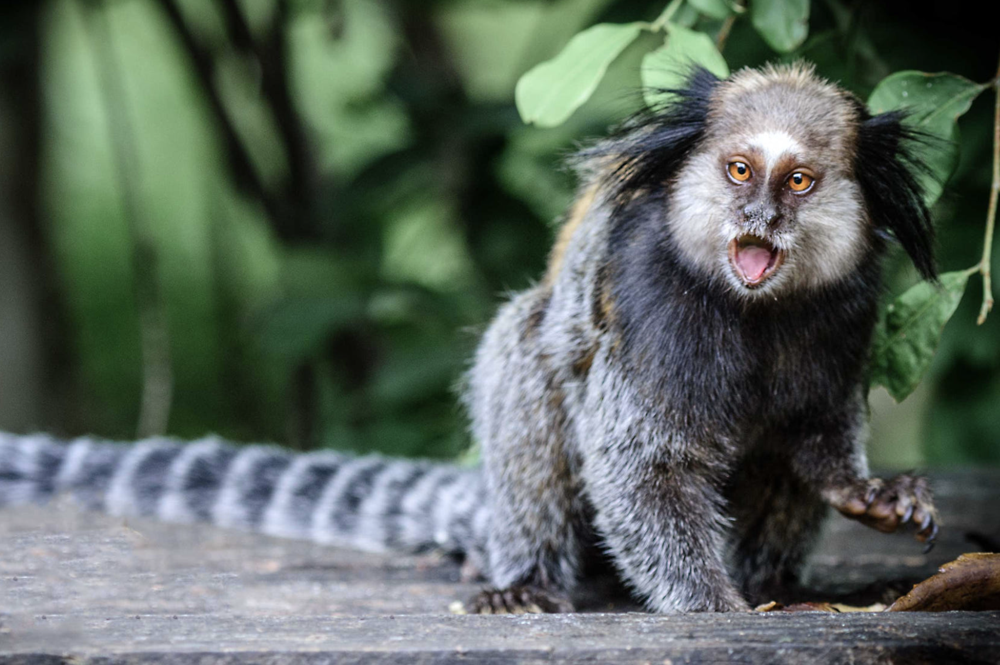
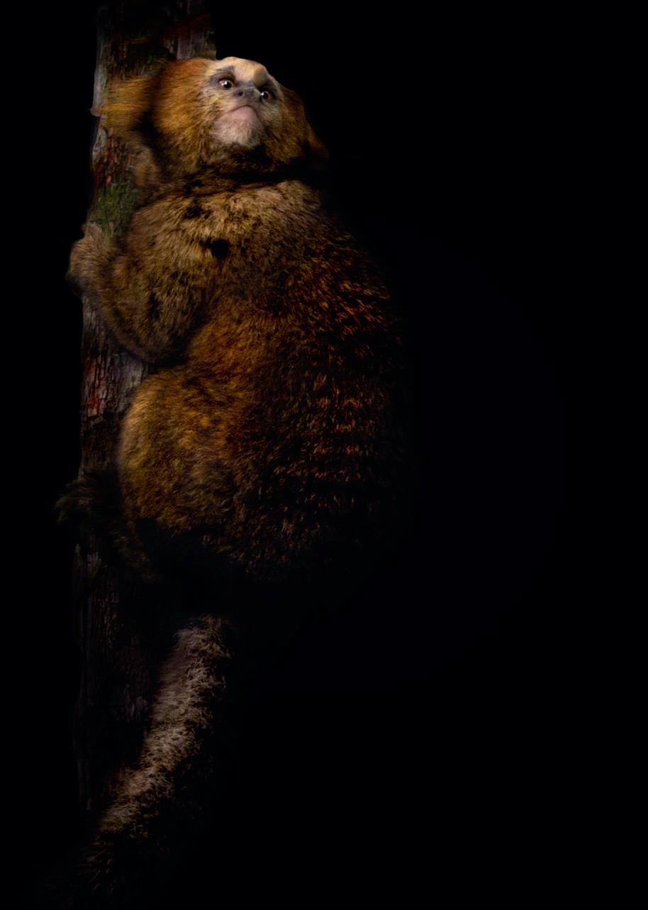
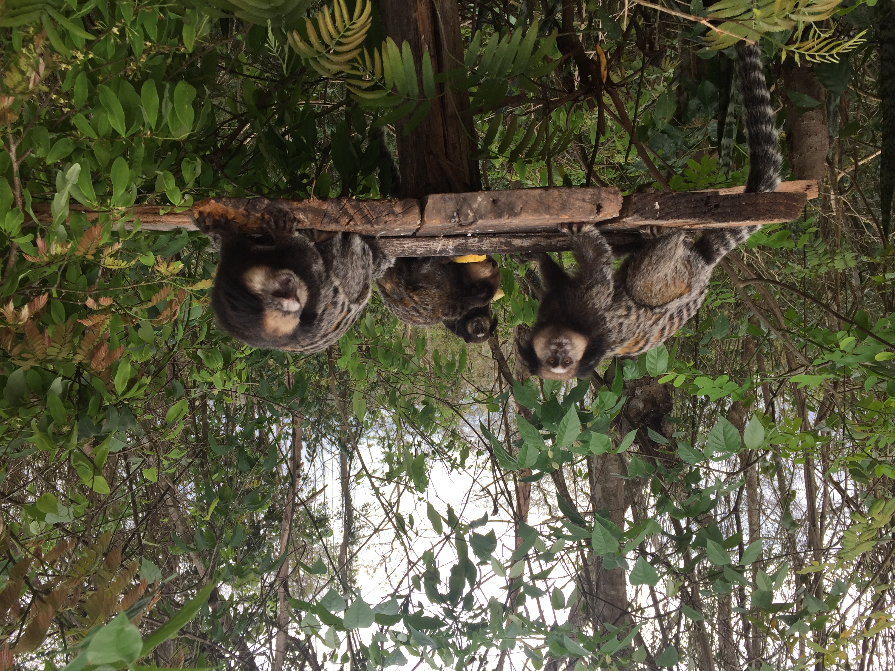
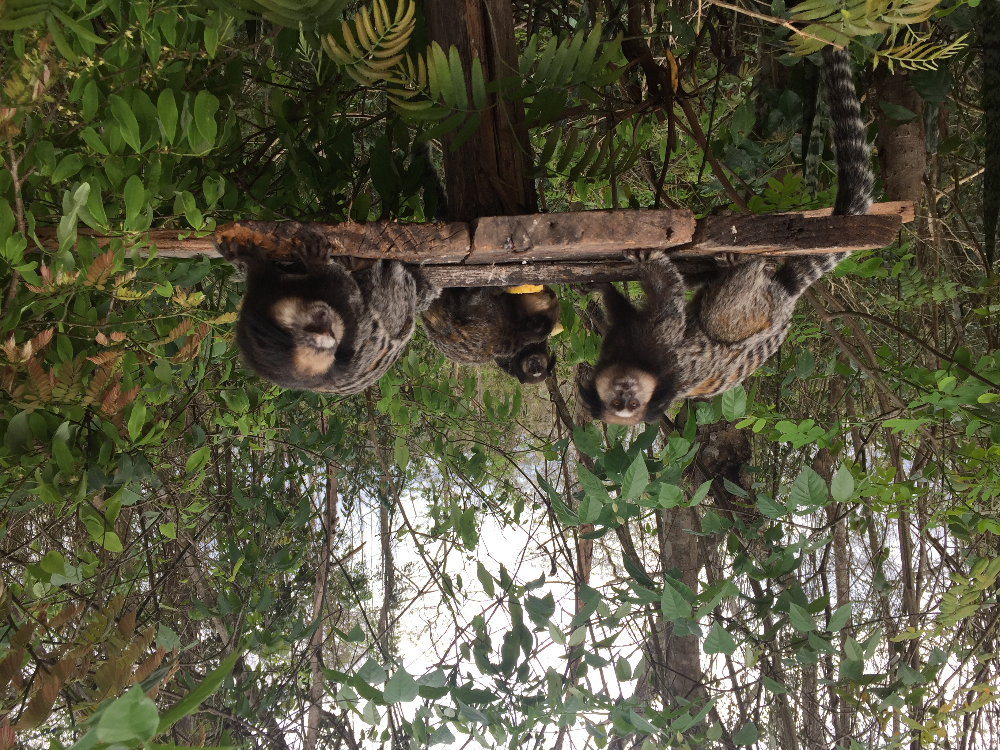

Joanna Malukiewicz, PhD

Hybridization - Platyrrhines - Microbes
Genomics - Microbiomes - Immunogenetics
 
Post-doctoral Researcher, Instituto de Medicina Tropical, Universidade de São Paulo, SP, Brazil
Guest Researcher, German Primate Center, Göttingen, Germany
Research (active construction... plz check back)
 

As an evolutionary genomicist I combine field work, molecular biology, and bioinformatics and apply 'omics' approaches to understand the evolutionary consequences of platyrrhine hybridization in speciation, biodiversity, and health.
The Callithrix genus of small, charismatic marmosets and their microbes represents my main biological study system. I maintain this work as an independent line of research thru international collaboration and with funding that has included a US National Science Foundation DDIG Grant, a Fulbright Fellowship, a Brazilian CNPq Young Talents Fellowship, and an EU Marie Curie-Skłodowski Individual Fellowship. I have recently extended my work to include work golden lion tamarins (Leontopithecus rosalia) and howler monkeys (Alouatta).
CV and Publications
Google Scholar Profile
ORCID Profile
Brazilian Lattes CV
Manuscripts In Prep
Joanna Malukiewiczet al. The genome of the black-tufted marmoset provides new insights into the immunogenetics and evolutionary history of Callithrix.
JLG Fonseca, MAB Oliveira, CS Igayara, PA Nicola, LCM Pereira, J Rogers, RCH del Rosario, C Roos, Joanna Malukiewicz. Comparison of mitogenomic and mitochondrial markers for the phylogenetic and evolutionary study of marmosets in captivity, with special focus on Callithrix jacchus.
Joanna Malukiewicz et al. Morphometric variation in Callithrix species and anthropogenic hybrids.
Joanna Malukiewicz et al. Evolutionary insights in Callithrix from low-coverage marmoset speciation and hybridization genomics.
Peer Reviewed Publications
Submitted
Joanna Malukiewicz, Mirela D’arc, Ceclia A. Dias, Reed A. Cartwright, Adriana D. Grativol, Silvia Bahadian Moreira, Antonizete R Souza, Maria Clotilde Henriques Tavares, Alcides Pissinatti, Carlos R. Ruiz-Miranda, André F. A. Santos. Bifidobacteria Define Gut Microbiome Profiles of Golden Lion Tamarin (Leontopithecus rosalia) and Marmoset (Callithrix sp.) Metagenomic Shotgun Pools. Scientific Reports.
Preprint available here.
2022
Joanna Malukiewicz, RA Cartwright, JA Dergam, CS Igayara, SE Kessler, SB Moreira, LT Nash, PA Nicola, LCM Pereira, A Pissinatti, CR Ruiz-Miranda, AT Ozga, AA Quirino, C Roos, DL Silva, AC Stone, AD Grativol. The gut microbiome of exudivorous marmosets in the wild and captivity. Scientific Reports. 12:5049.
Article available here.
G Formenti, K Theissinger, C Fernandes, I Bista, A Bombarely, C Bleidorn, C Ciofi, A Crottini, JA Godoy, JHöglund, Joanna Malukiewicz, A Mouton, RA. Oomen, S Paez, PJ Palsbøll, C Pampoulie, MJ Ruiz-López, H Svardal, C Theofanopoulou, J Vries, AM Waldvogel, G Zhang, C J Mazzoni, ED Jarvis, M Bálint, European Reference Genome Atlas(ERGA) Consortium. The era of reference genomes in conservation genomics. Trends in Ecology and Evolution. 37(3):197.
Article available here.
2021
Joanna Malukiewicz, J Dergam, AD Grativol, CS Igayara, CR Ruiz-Miranda, PA Nicola, LMC Pereira, A Varsani, MA Wilson, AC Stone, DL Silva, FFR Silva, D Zinner, C Roos. Genomic skimming and nanopore sequencing uncover cryptic hybridization in one of world's most threatened primates. Scientific Reports. 11:17279.
Article available here.
Joanna Malukiewicz, V Boere, MAB Oliveira, M D’arc, JVA Ferreira, J French, G Housman, CI Souza, L Jerusalinsky, FR Melo, MM Valença-Montenegro, SB Moreira, IO Silva, FS Pacheco, J Rogers, A Pissinatti, RCH del Rosario, C Ross, CR Ruiz-Miranda, LCM Pereira, N Schiel, FFR Silva, A Souto, V Šlipogor, S Tardif. An Introduction to the Callithrix Genus and Overview of Recent Advances in Marmoset Research. ILAR Journal. ilab027.
Article available here.
Joanna Malukiewicz, RA Cartwright, NHA Curi, JA Dergam, CS Igayara, SB Moreira, CV Molina, PA Nicola, A Noll, M Passamani, LCM Pereira, A Pissinati, CR Ruiz-Miranda, DL Silva, AC Stone, D Zinner, C Roos. Mitogenomic phylogeny of Callithrix with special focus on human transferred taxa. BMC Genomics. 22: 239.
Article available here.
ACRS Gariglio, V Boere, Joanna Malukiewicz, LAFA Calais Jr, IO Silva. Hematology and blood chemistry reference values of free‐ranging Callithrix geoffroyi in urban environment in Espírito Santo state, Brazil. Journal of Medical Anthropology. 50:157–163.
Article available here.
2019
RR Ackermann, ML Arnold, JA Cahill, L Cortés-Ortiz, BJ Evans, BR Grant, PR Grant, B Hallgrimsson, R Humphreys, CJ Jolly, Joanna Malukiewicz, MD Nidiffer, CJ Percival, T Ritzman, C Roos, CC Roseman, L Schroeder, FH Smith, K Warren, R Wayne, D Zinner. Hybridization in human evolution: insights from other organisms. Evolutionary Anthropology. 28:189– 209.
Article available here.
Joanna Malukiewicz. A review of the evolutionary and conservation implications of experimental, natural, and anthropogenic hybridization in Callithrix marmosets. International Journal of Primatology. 40:72–98.
Article available here.
2018
FFR Silva, Joanna Malukiewicz, LC Silva, RS Carvalho, CR Ruiz-Miranda, FAS Coelho, MP Figueira, V Boere, IO Silva. A survey of natural and introduced Callithrix species distribution in southern and eastern portions of Minas Gerais state, Brazil. Primate Conservation. 32:1-18.
Article available here.
RS Carvalho, HG Bergallo, C Cronemberger, T Guimarães-Luiz, CA Igayara-Souza, L Jerusalinsky, C Knogge, WR Lacerda, Joanna Malukiewicz, FR Melo, SB Moreira, DG Pereira, A Pissinatti, M Port-Carvalho, CR Ruiz-Miranda, D Wormell. Callithrix aurita: A tiny primate on the edge of extinction in the Brazilian Atlantic Forest. Neotropical Primates. 24:1-8.
Article available here.
2017
Joanna Malukiewicz, K Guschanski, C Hepp, AC Stone. Two new complete mitochondrial genomes of Callithrix marmosets and a mitochondrial phylogeny of the jacchus marmoset group. American Journal of Physical Anthropology. 162(1):157-169.
Article available here.
2016
Joanna Malukiewicz, K Guschanski, CR Ruiz-Miranda, MAO Monteiro da Cruz, AD Grativol, AC Stone. Application of PE-RADseq to the study of genomic diversity and divergence of two Brazilian marmoset species (Callithrix jacchus and C. penicillata ). American Journal of Primatology . 79(2):1-12.
Article available here.
2015
G Housman, Joanna Malukiewicz, V Boere, AD Grativol, LCM Pereira, IO Silva, CR Ruiz-Miranda, R Truman, AC Stone. Mycobacterial pathogens that cause tuberculosis and leprosy can be detected in wild animal populations using non-invasive cheek swab samples and qPCR assays. PLOS Neglected Tropical Diseases. 9(11): e0004198.
Article available here.
Joanna Malukiewicz, J Dergam, AD Grativol, CS Igayara, CR Ruiz-Miranda, PA Nicola, LMC Pereira, A Varsani, MA Wilson, AC Stone, DL Silva, FFR Silva, D Zinner, C Roos. Genomic skimming and nanopore sequencing uncover cryptic hybridization in one of world's most threatened primates. Scientific Reports.11:17279.
Article available here.
2014
Joanna Malukiewicz, V Boere, JA French, L Fuzessy, AD Grativol, IO Silva, LCM Pereira, CR Ruiz- Miranda, YM Valença, AC Stone. Hybridization effects genetic diversity of the common and black-tufted marmoset (Callithrix jacchus and C. penicillata) mitochondrial control region. American Journal of Physical Anthropology. 155:522-536.
Article available here.
LF Fuzessy, IO Silva, J Malukiewicz, FFR Silva, MC Ponzio, V Boere, RR Ackermann. Morphological variation in wild marmosets (Callithrix penicillata and C. geoffroyi) and their hybrids. Evolutionary Biology. 41:480-493.
Article available here.
2012
RC Iskow, O Gokcumen, A Abyzov, Joanna Malukiewicz, Q Zhu, AT Sukumar, AA Pai, RE Mills, L Habegger, DA Cusanovich, MA Rubel, GH Perry, M Gerstein, AC Stone, Y Gilad, C Lee. Regulatory element copy number differences shape primate expression profiles. PNAS. 109(31):12656-12661.
Article available here.
2006
EG Chapman, BA Foote, J Malukiewicz, WR Hoeh. 2006. Parallel evolution of larvalmorphology and habitat in the snail-killing fly genus Tetanocera. Journal of Evolutionary Biology. 19(5):1459-1474.
Article available here.
News and Sci Comm
2022
For late October, I have been invited to speak at III Simpósio Internacional de Genética da Pós-Graduação em Genética (PGGen) da UFRJ at the Federal University of Rio de Janeiro, RJ, Brazil.
For mid-November, I will partake as an invited panelist in a symposium on New World primates at the 16th Meeting of the Latin American Association of Biological Anthropology in São Paulo, SP, Brazil.
2021
It was a real blast and pleasure giving an invited plenary talk at the 2021 Nanopore Community Meeting regarding my recent publication in Scientific Reports on the first case of genetic introgression of genetic material from exotic black tufted marmosets (Callithrix penicillata) into the genetic background of the highly endangered Callithrix aurita. I specifically discussed how we combined genomic skimming of the mitogenome with Oxford Nanopore MinION sequencing to study marmoset hybridization.

Video link to presentation
The Institute of Advanced Studies at the University Sao Paulo hosted a seminar to give an overview of the situation of the marmosets in Brazil, discuss the National Action Plan for the Conservation of Primates of the Atlantic Forest and the Collared Sloth, and the study of priorities on their behavior and population management. I was invited as a panelist to this event to discuss the role of genetic approaches for the conservation of Callithrix aurita.

Video link to seminar
2020
With my recent preprint of the first genetic account of introgression of genetic material from exotic Callithrix penicillata into the highly endangered C. aurita, I was interviewed by two international media outlets about these new findings and the effects of hybridization on marmoset conservation. In these new stories, I shared my experience in applying nanopore sequencing to speed up marmoset conservation as the Callithrix genus is still largely data-deficient in term of genetics. I also spoke about how genetics can help us understand the process of anthropogentic hybridization impacting wild marmoset populations.

Mangabey

O Globo
2018
I was invited to the National Academy of Sciences, Washington, DC, US to participate as a speaker at the ILAR Roundtable Workshop: Care, Use and Welfare of Marmosets as Animal Models for Gene Editing-Based Biomedical Research. I spoke about my research on genetics and the microbiome on wild marmosets in Brazil.

Video link to my presentation
About Me
I was born and spent parts of my childhood in Poland, but have lived all over the world, spending many years the US NYC area, Brazil, and Germany. My past two dogs were the best companions for exploring such places with me. I obtained a BS in evolutionary anthropology and and biology from Rutgers University, NJ, US, MA in biological anthropology from Kent State University, OH, US, and PhD in biology from Arizona State University, AZ, US. I am fluent in Polish, Portuguese, and English, and working on German. I especially enjoy big, culturally vibrant cities as well as nature. For hobbies, I listen avidly to metal, jazz, blue grass, and Brazilian popular music (MBP). I photograph city, nature, and nocturnal landscapes. Otherwise, you'll find me running, biking, hiking, swimming, or doing pole fitness.
Contact
Please use this form to get into contact with me.